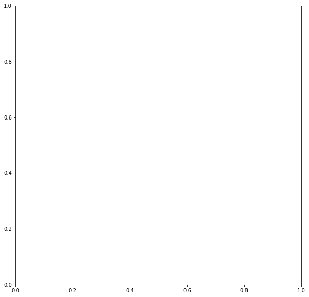

Introduction to pyjeo
Material provided by Dr. Pieter Kempeneers (European Commission, Joint Research Centre)
pyjeo is the follow up of PKTOOLS, a suite of utilities written in C++ for image processing with a focus on remote sensing applications. It is distributed under a General Public License (GPLv3) as a Python package.
In a nutshell, the main differences between pyjeo and pktools from a user’s perspective are:
pyjeo is a Python package should be run in a Python environment, whereas pktools applications are run from the command line (e.g., in a bash shell)
pyjeo runs with images entirely in memory, whereas pktools runs most applications line per line. This makes pyjeo considerably faster, but with a larger memory footprint. However, there are some methods implemented in pyjeo to reduce the memory footprint by tiling the image
Run the following script to perform the installation of pyjeo
sudo apt update
sudo apt upgrade -y
cd ~/Downloads
wget https://raw.githubusercontent.com/selvaje/SE_data/main/exercise/install_pyjeo4osgeo16.sh
./install_pyjeo4osgeo16.sh
Import Python modules
[1]:
# Trick to consider for venv within a notebook: simply use a clean sys.path taken from the shell
import sys
sys.path
[1]:
['/home/selv/SE_docs/SE_docs/source/PKTOOLS',
'/usr/lib/python310.zip',
'/usr/lib/python3.10',
'/usr/lib/python3.10/lib-dynload',
'',
'/home/selv/.local/lib/python3.10/site-packages',
'/usr/local/lib/python3.10/dist-packages',
'/usr/lib/python3/dist-packages',
'/usr/lib/python3.10/dist-packages']
[2]:
sys.path = ['', '/usr/lib/python310.zip', '/usr/lib/python3.10', '/usr/lib/python3.10/lib-dynload', '/home/user/venv/lib/python3.10/site-packages', '/home/user/.local/lib/python3.10/site-packages', '/home/user/.local/lib/python3.10/site-packages/pyjeo-1.1.2-py3.10.egg', '/home/user/.local/lib/python3.10/site-packages/rioxarray-0.15.5-py3.10.egg', '/home/user/.local/lib/python3.10/site-packages/pyproj-3.6.1-py3.10-linux-x86_64.egg', '/usr/lib/python3/dist-packages', '/usr/local/lib/python3.10/dist-packages', '/usr/lib/python3.10/dist-packages']
[3]:
sys.path
[3]:
['',
'/usr/lib/python310.zip',
'/usr/lib/python3.10',
'/usr/lib/python3.10/lib-dynload',
'/home/user/venv/lib/python3.10/site-packages',
'/home/user/.local/lib/python3.10/site-packages',
'/home/user/.local/lib/python3.10/site-packages/pyjeo-1.1.2-py3.10.egg',
'/home/user/.local/lib/python3.10/site-packages/rioxarray-0.15.5-py3.10.egg',
'/home/user/.local/lib/python3.10/site-packages/pyproj-3.6.1-py3.10-linux-x86_64.egg',
'/usr/lib/python3/dist-packages',
'/usr/local/lib/python3.10/dist-packages',
'/usr/lib/python3.10/dist-packages']
[4]:
# from now on all should work as expected...
[5]:
from pathlib import Path
import numpy as np
import pandas as pd
%matplotlib inline
import matplotlib.pyplot as plt
from datetime import datetime
import pyjeo as pj
---------------------------------------------------------------------------
ModuleNotFoundError Traceback (most recent call last)
Cell In[5], line 7
5 import matplotlib.pyplot as plt
6 from datetime import datetime
----> 7 import pyjeo as pj
ModuleNotFoundError: No module named 'pyjeo'
Call the inline help function for pj.geometry.warp
[6]:
help(pj.geometry.warp)
---------------------------------------------------------------------------
NameError Traceback (most recent call last)
Cell In[6], line 1
----> 1 help(pj.geometry.warp)
NameError: name 'pj' is not defined
Jim: a geospatial raster dataset object
Open an image and show its properties
[7]:
jim = pj.Jim('geodata/vegetation/ETmean08-11.tif')
---------------------------------------------------------------------------
NameError Traceback (most recent call last)
Cell In[7], line 1
----> 1 jim = pj.Jim('geodata/vegetation/ETmean08-11.tif')
NameError: name 'pj' is not defined
[8]:
jim.properties.nrOfCol()
---------------------------------------------------------------------------
NameError Traceback (most recent call last)
Cell In[8], line 1
----> 1 jim.properties.nrOfCol()
NameError: name 'jim' is not defined
A Jim object is a geospatial dataset within a coordinate reference system
[9]:
jim.properties.getProjection()
---------------------------------------------------------------------------
NameError Traceback (most recent call last)
Cell In[9], line 1
----> 1 jim.properties.getProjection()
NameError: name 'jim' is not defined
From gdal: “A geotransform is an affine transformation from the image coordinate space (row, column), also known as (pixel, line) to the georeferenced coordinate space (projected or geographic coordinates)”
Geotransform is an array with 6 items:
[0] top left x
[1] w-e pixel resolution
[2] rotation, 0 if image is “north up”
[3] top left y
[4] rotation, 0 if image is “north up”
[5] n-s pixel resolution
[10]:
jim.properties.getGeoTransform()
---------------------------------------------------------------------------
NameError Traceback (most recent call last)
Cell In[10], line 1
----> 1 jim.properties.getGeoTransform()
NameError: name 'jim' is not defined
We have a single band and single plane raster object
[11]:
jim.properties.nrOfBand()
---------------------------------------------------------------------------
NameError Traceback (most recent call last)
Cell In[11], line 1
----> 1 jim.properties.nrOfBand()
NameError: name 'jim' is not defined
[12]:
jim.properties.nrOfPlane()
---------------------------------------------------------------------------
NameError Traceback (most recent call last)
Cell In[12], line 1
----> 1 jim.properties.nrOfPlane()
NameError: name 'jim' is not defined
Open a second GeoTIFF image of the same dimension
[13]:
gpp = pj.Jim('geodata/vegetation/GPPmean08-11.tif')
---------------------------------------------------------------------------
NameError Traceback (most recent call last)
Cell In[13], line 1
----> 1 gpp = pj.Jim('geodata/vegetation/GPPmean08-11.tif')
NameError: name 'pj' is not defined
Stack this image to the existing bands of jim, creating a multi-band jim object
[14]:
jim.geometry.stackBand(gpp)
---------------------------------------------------------------------------
NameError Traceback (most recent call last)
Cell In[14], line 1
----> 1 jim.geometry.stackBand(gpp)
NameError: name 'jim' is not defined
[15]:
jim.properties.nrOfBand()
---------------------------------------------------------------------------
NameError Traceback (most recent call last)
Cell In[15], line 1
----> 1 jim.properties.nrOfBand()
NameError: name 'jim' is not defined
Exercise 1: stackBand function vs. method
Create a new jim object jim_stacked using the stackBand function instead of the stackBand method. It should contain two bands, one for ETmean08-11.tif and one for GPPmean08-11.tif.
[16]:
jim_stacked = pj.geometry.stackBand(jim, gpp)
---------------------------------------------------------------------------
NameError Traceback (most recent call last)
Cell In[16], line 1
----> 1 jim_stacked = pj.geometry.stackBand(jim, gpp)
NameError: name 'pj' is not defined
[17]:
jim_stacked.properties.nrOfBand()
---------------------------------------------------------------------------
NameError Traceback (most recent call last)
Cell In[17], line 1
----> 1 jim_stacked.properties.nrOfBand()
NameError: name 'jim_stacked' is not defined
Labeled dimensions
Let’s label the dimensions
[18]:
bandnames = ['ET', 'GPP']
planenames = [datetime.strptime('2019-08-11','%Y-%m-%d')]
jim.properties.setDimension({'band' : bandnames, 'plane' : planenames})
---------------------------------------------------------------------------
NameError Traceback (most recent call last)
Cell In[18], line 3
1 bandnames = ['ET', 'GPP']
2 planenames = [datetime.strptime('2019-08-11','%Y-%m-%d')]
----> 3 jim.properties.setDimension({'band' : bandnames, 'plane' : planenames})
NameError: name 'jim' is not defined
[19]:
jim.properties.getDimension('band')
---------------------------------------------------------------------------
NameError Traceback (most recent call last)
Cell In[19], line 1
----> 1 jim.properties.getDimension('band')
NameError: name 'jim' is not defined
[20]:
len(jim.properties.getDimension('plane'))
---------------------------------------------------------------------------
NameError Traceback (most recent call last)
Cell In[20], line 1
----> 1 len(jim.properties.getDimension('plane'))
NameError: name 'jim' is not defined
Exercise 2: cropBand using numbered and labeled index
Crop second band as a new image (index starts from 0)
[21]:
jim1 = pj.geometry.cropBand(jim, 1)
---------------------------------------------------------------------------
NameError Traceback (most recent call last)
Cell In[21], line 1
----> 1 jim1 = pj.geometry.cropBand(jim, 1)
NameError: name 'pj' is not defined
Create a new jim object gpp that contains the second band using the `cropBand <>`__ function and the labeled index (‘GPP’)
[22]:
gpp = pj.geometry.cropBand(jim, 'GPP')
---------------------------------------------------------------------------
NameError Traceback (most recent call last)
Cell In[22], line 1
----> 1 gpp = pj.geometry.cropBand(jim, 'GPP')
NameError: name 'pj' is not defined
Check if results are identical
[23]:
jim1.properties.isEqual(gpp)
---------------------------------------------------------------------------
NameError Traceback (most recent call last)
Cell In[23], line 1
----> 1 jim1.properties.isEqual(gpp)
NameError: name 'jim1' is not defined
[24]:
jim1.properties.getDimension()
---------------------------------------------------------------------------
NameError Traceback (most recent call last)
Cell In[24], line 1
----> 1 jim1.properties.getDimension()
NameError: name 'jim1' is not defined
Working with multi-plane Jim objects
First convert the bands to planes using band2plane
[25]:
jim.geometry.band2plane()
---------------------------------------------------------------------------
NameError Traceback (most recent call last)
Cell In[25], line 1
----> 1 jim.geometry.band2plane()
NameError: name 'jim' is not defined
The labels of band are copied to plane
[26]:
jim.properties.getDimension()
---------------------------------------------------------------------------
NameError Traceback (most recent call last)
Cell In[26], line 1
----> 1 jim.properties.getDimension()
NameError: name 'jim' is not defined
Calculate composites via reducePlane
Reduce the planes by calculating the mean of all planes
[27]:
jim_mean = pj.geometry.reducePlane(jim, 'mean')
---------------------------------------------------------------------------
NameError Traceback (most recent call last)
Cell In[27], line 1
----> 1 jim_mean = pj.geometry.reducePlane(jim, 'mean')
NameError: name 'pj' is not defined
Where is the RuntimeWarning coming from?
[28]:
jim.stats.getStats()
---------------------------------------------------------------------------
NameError Traceback (most recent call last)
Cell In[28], line 1
----> 1 jim.stats.getStats()
NameError: name 'jim' is not defined
[29]:
jim[jim < 0] = 0
jim.stats.getStats()
---------------------------------------------------------------------------
NameError Traceback (most recent call last)
Cell In[29], line 1
----> 1 jim[jim < 0] = 0
2 jim.stats.getStats()
NameError: name 'jim' is not defined
[30]:
jim_mean = pj.geometry.reducePlane(jim, 'mean')
---------------------------------------------------------------------------
NameError Traceback (most recent call last)
Cell In[30], line 1
----> 1 jim_mean = pj.geometry.reducePlane(jim, 'mean')
NameError: name 'pj' is not defined
Calculate custom composites via callback function in reducePlane
[31]:
def getMax(reduced, plane):
return pj.pixops.supremum(reduced, plane)
jim_max = pj.geometry.reducePlane(jim, getMax)
---------------------------------------------------------------------------
NameError Traceback (most recent call last)
Cell In[31], line 3
1 def getMax(reduced, plane):
2 return pj.pixops.supremum(reduced, plane)
----> 3 jim_max = pj.geometry.reducePlane(jim, getMax)
NameError: name 'pj' is not defined
Crop the plane ET from jim using the method cropPlane. Check the resulting jim is a single plane and single band Jim object
[32]:
# original code by Pieter...
jim.geometry.cropPlane('ET')
print(jim.properties.nrOfPlane())
print(jim.properties.nrOfBand())
---------------------------------------------------------------------------
NameError Traceback (most recent call last)
Cell In[32], line 2
1 # original code by Pieter...
----> 2 jim.geometry.cropPlane('ET')
3 print(jim.properties.nrOfPlane())
4 print(jim.properties.nrOfBand())
NameError: name 'jim' is not defined
[33]:
# A little fix...
jim.geometry.cropPlane(0)
print(jim.properties.nrOfPlane())
print(jim.properties.nrOfBand())
---------------------------------------------------------------------------
NameError Traceback (most recent call last)
Cell In[33], line 2
1 # A little fix...
----> 2 jim.geometry.cropPlane(0)
3 print(jim.properties.nrOfPlane())
4 print(jim.properties.nrOfBand())
NameError: name 'jim' is not defined
[34]:
jim.geometry.plane2band()
bandnames = ['ET']
planenames = [datetime.strptime('2019-08-11','%Y-%m-%d')]
jim.properties.setDimension({'band' : bandnames, 'plane' : planenames})
---------------------------------------------------------------------------
NameError Traceback (most recent call last)
Cell In[34], line 1
----> 1 jim.geometry.plane2band()
2 bandnames = ['ET']
3 planenames = [datetime.strptime('2019-08-11','%Y-%m-%d')]
NameError: name 'jim' is not defined
Bridging to third party libraries: Numpy
[35]:
jim.np()
---------------------------------------------------------------------------
NameError Traceback (most recent call last)
Cell In[35], line 1
----> 1 jim.np()
NameError: name 'jim' is not defined
Check the type of jim.np()
[36]:
type(jim.np())
---------------------------------------------------------------------------
NameError Traceback (most recent call last)
Cell In[36], line 1
----> 1 type(jim.np())
NameError: name 'jim' is not defined
Use sum function of Numpy to assert there are no pixels where jim_max < jim_mean
[37]:
(jim_max < jim_mean).np().sum()
---------------------------------------------------------------------------
NameError Traceback (most recent call last)
Cell In[37], line 1
----> 1 (jim_max < jim_mean).np().sum()
NameError: name 'jim_max' is not defined
Get items
With pyjeo we create the masks in memory in a “pythonic” way using get items without the need to write temporary files.
Get sub-dataset based on pixel coordinates (first 3 rows and columns, starting from 0)
[38]:
jim[0:3,0:3]
---------------------------------------------------------------------------
NameError Traceback (most recent call last)
Cell In[38], line 1
----> 1 jim[0:3,0:3]
NameError: name 'jim' is not defined
Last 3 rows and columns, show geographic bounding box [ulx, uly, lrx, lry]
[39]:
jim[-3:,-3:].properties.getBBox()
---------------------------------------------------------------------------
NameError Traceback (most recent call last)
Cell In[39], line 1
----> 1 jim[-3:,-3:].properties.getBBox()
NameError: name 'jim' is not defined
[40]:
jim[0:3,0:3].np()
---------------------------------------------------------------------------
NameError Traceback (most recent call last)
Cell In[40], line 1
----> 1 jim[0:3,0:3].np()
NameError: name 'jim' is not defined
Set items
In pyjeo, we can apply the mask in a “pythonic” way using set items
[41]:
jim[0:3,0:3] = 0
jim[0:5,0:5].np()
---------------------------------------------------------------------------
NameError Traceback (most recent call last)
Cell In[41], line 1
----> 1 jim[0:3,0:3] = 0
2 jim[0:5,0:5].np()
NameError: name 'jim' is not defined
Display image using matplotlib
We can show an image with matplotlib by providing a Numpy representation of the dataset
[42]:
# plt.gray() # show the filtered result in grayscale
fig = plt.figure(figsize=(10,10))
ax1 = fig.add_subplot(111)
ax1.imshow(jim.np())
plt.show()
---------------------------------------------------------------------------
NameError Traceback (most recent call last)
Cell In[42], line 4
2 fig = plt.figure(figsize=(10,10))
3 ax1 = fig.add_subplot(111)
----> 4 ax1.imshow(jim.np())
5 plt.show()
NameError: name 'jim' is not defined

Calculate median filter via scipy
[43]:
from scipy import ndimage
npimage = ndimage.median_filter(jim.np(), size = 5)
---------------------------------------------------------------------------
NameError Traceback (most recent call last)
Cell In[43], line 2
1 from scipy import ndimage
----> 2 npimage = ndimage.median_filter(jim.np(), size = 5)
NameError: name 'jim' is not defined
[44]:
# plt.gray() # show the filtered result in grayscale
fig = plt.figure(figsize=(10,10))
ax1 = fig.add_subplot(111)
ax1.imshow(npimage)
plt.show()
---------------------------------------------------------------------------
NameError Traceback (most recent call last)
Cell In[44], line 4
2 fig = plt.figure(figsize=(10,10))
3 ax1 = fig.add_subplot(111)
----> 4 ax1.imshow(npimage)
5 plt.show()
NameError: name 'npimage' is not defined

Exercise 4: Create a geospatial Jim object with CRS from a Numpy array
A numpy array is not a geospatial dataset with a spatial coordinate reference system !
[45]:
ajim = pj.np2jim(npimage)
print(ajim.properties.getProjection())
print(ajim.properties.getGeoTransform())
---------------------------------------------------------------------------
NameError Traceback (most recent call last)
Cell In[45], line 1
----> 1 ajim = pj.np2jim(npimage)
2 print(ajim.properties.getProjection())
3 print(ajim.properties.getGeoTransform())
NameError: name 'pj' is not defined
Use setProjection and getProjection to set the Coordinate Reference System (CRS) of ajim
[ ]:
Calculating the median_filter in place using the output parameter
[46]:
ndimage.median_filter(jim.np(), output = jim.np(), size = 5)
---------------------------------------------------------------------------
NameError Traceback (most recent call last)
Cell In[46], line 1
----> 1 ndimage.median_filter(jim.np(), output = jim.np(), size = 5)
NameError: name 'jim' is not defined
As an alternative, we can set the Numpy representation of a Jim object in place
[47]:
jim.np()[:] = ndimage.median_filter(jim.np(), size = 5)
---------------------------------------------------------------------------
NameError Traceback (most recent call last)
Cell In[47], line 1
----> 1 jim.np()[:] = ndimage.median_filter(jim.np(), size = 5)
NameError: name 'jim' is not defined
Bridging to third party libraries: Xarray
[48]:
jim.xr()
---------------------------------------------------------------------------
NameError Traceback (most recent call last)
Cell In[48], line 1
----> 1 jim.xr()
NameError: name 'jim' is not defined
An Xarray dataset is defined with a spatial coordinate reference system !
[49]:
ajim = pj.xr2jim(jim.xr())
---------------------------------------------------------------------------
NameError Traceback (most recent call last)
Cell In[49], line 1
----> 1 ajim = pj.xr2jim(jim.xr())
NameError: name 'pj' is not defined
[50]:
print(ajim.properties.getProjection())
print(ajim.properties.getGeoTransform())
---------------------------------------------------------------------------
NameError Traceback (most recent call last)
Cell In[50], line 1
----> 1 print(ajim.properties.getProjection())
2 print(ajim.properties.getGeoTransform())
NameError: name 'ajim' is not defined
At the basis we find a Numpy data array
[51]:
type(jim.xr().ET.data)
---------------------------------------------------------------------------
NameError Traceback (most recent call last)
Cell In[51], line 1
----> 1 type(jim.xr().ET.data)
NameError: name 'jim' is not defined
Calculate median filter via Xarray
Processing can take several minutes…
[52]:
# xr_median = jim.xr().ET.rolling(x = 3, y = 3, center=True).median()
[53]:
# xr_median.plot()
Notice that XArray member functions return the processed result and do not alter the input image !
Bridging JimVect to third party libraries
[54]:
sample = pj.JimVect('geodata/shp/polygons.sqlite')
---------------------------------------------------------------------------
NameError Traceback (most recent call last)
Cell In[54], line 1
----> 1 sample = pj.JimVect('geodata/shp/polygons.sqlite')
NameError: name 'pj' is not defined
[55]:
import pandas as pd
pdf = pd.DataFrame(sample.dict())
pdf
---------------------------------------------------------------------------
NameError Traceback (most recent call last)
Cell In[55], line 2
1 import pandas as pd
----> 2 pdf = pd.DataFrame(sample.dict())
3 pdf
NameError: name 'sample' is not defined
Data extraction and regional statistics
[56]:
extracted = pj.geometry.extract(sample, jim, rule='mean', output='/vsimem/mean.json', oformat='GeoJSON')
---------------------------------------------------------------------------
NameError Traceback (most recent call last)
Cell In[56], line 1
----> 1 extracted = pj.geometry.extract(sample, jim, rule='mean', output='/vsimem/mean.json', oformat='GeoJSON')
NameError: name 'pj' is not defined
[57]:
pdf = pd.DataFrame(extracted.dict())
pdf
---------------------------------------------------------------------------
NameError Traceback (most recent call last)
Cell In[57], line 1
----> 1 pdf = pd.DataFrame(extracted.dict())
2 pdf
NameError: name 'extracted' is not defined